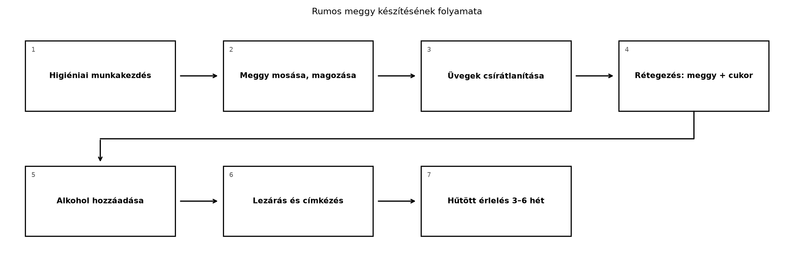

A gyümölcstartósítás három útja – hőkezelés, vastagcukor és alkohol – akkor válik napi munkává, amikor a nyári barackból télre lekvárt, a friss meggyből karácsonyi beigli-tölteléket, a narancshéjból bonbonba való kandírozott betétet készítünk. A cukrászüzemben ezek a félkész termékek nemcsak tartósítanak, hanem ízt, állagot és gazdaságosságot is adnak: a saját készítésű dzsem, rumos gyümölcs vagy kandírozott héj receptúrája kiszámítható, nyomon követhető és a vendég számára is elmesélhető.
Képzeljünk el egy kora nyári termelési napot. Reggel beérkezik 10 kg friss sárgabarack. Egy részéből még aznap dzsem készül, mert a gyümölcs érett, és a hűtőtároló kapacitása korlátozott. A magozás, aprítás, cukorral főzés, forró töltés és dunsztolás után késő délutánra polcokon sorakoznak a lekvárosüvegek. Ugyanazon a napon egy másik edényben friss meggyből tesznek rumos alapot egy jövő heti tortához. Este a hűtőben pihen a kandírozásra előkészített narancshéj is. A három eljárás közös elve: megfosztjuk a mikroorganizmusokat a szaporodás feltételeitől – hővel, magas cukortartalommal vagy alkohollal –, és a készítményt tisztán, jól zárva tároljuk.
Definíció. Befőzés (hőkezeléses tartósítás). A befőzés olyan hőkezelés, amely a gyümölcsöt vagy gyümölcskészítményt forrón, csíraszegény körülmények között légmentesen záródó edénybe tölti, majd hőkezeli (pasztőrözi) vagy forró töltés után lassan hűti, hogy a benne lévő mikroorganizmusok elpusztuljanak vagy szaporodásra képtelenné váljanak. A légmentes zárás megakadályozza az utólagos befertőződést.
Definíció. Pasztőrözés. A pasztőrözés a forráspont alatti, meghatározott ideig tartó hőkezelés, amely a kórokozó és a romlást okozó mikroorganizmusok nagy részét elpusztítja, de nem sterilizál. Gyümölcsöknél és savas készítményeknél általában elegendő, mert a savas közeg (pH 4,5 alatt) gátolja a veszélyes spórás baktériumokat (ellenőrizendő: hatályos mikrobiológiai és technológiai irányelvek).
Definíció. Vastagcukorban tartósítás. A gyümölcsöt annyi cukorral főzzük vagy rétegezzük, hogy a vízaktivitás lecsökkenjen, és a mikroorganizmusok ne tudjanak szaporodni. A magas cukortartalom ozmotikus nyomást gyakorol a sejtekre, vizet von el, ezért tartósít. Ebbe a csoportba tartozik a lekvár, dzsem, gyümölcsíz, zselé és a kandírozás.
Definíció. Alkoholban tartósítás. Az etanol megfelelő koncentrációban gátolja a mikroorganizmusok szaporodását. A gyümölcsöt élelmiszer-minőségű alkoholos itallal (pl. rum, konyak, pálinka) öntjük le; az alkoholtartalom és a cukor együtt tartósít. A készítményt hűtve tároljuk, és felhasználás előtt hőkezelhetjük.
Szabály. Minden tartósításnál a nyersanyag, az eszköz, az edény és a dolgozó higiéniája egyszerre számít. A hőkezelés nem mentesít a rossz alapanyag alól: hibás, penészes, földes gyümölcsöt nem szabad „megmenteni”. A tartósítás az élelmiszerbiztonsági lánc része, ezért nyomon követhetőnek kell lennie.
A befőzés technológiai lépései:
Higiénia. A befőzés során a kézmosás, a tiszta munkaruha, a forró edények és a csírátlanított üvegek a kritikus feltételek. A töltésnél ne érintsük meg a perem belső oldalát.
Figyelem. A forró gyümölcsmassza súlyos égési sérülést okozhat. Hosszú nyelű eszközzel keverjünk, a gőz elől hajoljunk félre, és az üvegeket hőálló kesztyűvel fogjuk meg.
A befőttesüveg részeit (ép perem, tető tömítéssel, fejtér, termék), a vízfürdős pasztőrözés összeállítását (rács a fazék alján, a víz az üvegek vállát ellepi, hőmérő) és a töltéstől a tető behúzódásának ellenőrzéséig tartó lépéseket az ábra mutatja. A fejtér nagyságát és a pasztőrözés hőfok–idő értékeit a gyártói utasítás, illetve az üzemi előírás adja (ellenőrizendő).
A Magyar Élelmiszerkönyv és a fogyasztói tájékoztatási szabályok szerint a gyümölcskészítmények megnevezése és összetétele eltérő. A leggyakoribb kategóriák:
| Termékcsoport | Jellemző | Megjegyzés |
|---|---|---|
| Dzsem, extra dzsem | Gyümölcsből (gyümölcspépből), cukorból és vízből zselésedésig főzött, darabos vagy áttört készítmény | Minimális gyümölcstartalom és szárazanyag a 2001/113/EK irányelv és a Magyar Élelmiszerkönyv szerint, az irányelv módosításait is figyelembe véve (ellenőrizendő) |
| Zselé | Gyümölcsléből vagy -kivonatból, leszűrve, zselésítve | Gyümölcstartalom és szárazanyag előírás ellenőrizendő |
| Marmelád | Citrusfélékből készült dzsem (az uniós szabályozás szerinti megnevezés) | Az „angol” marmelád megnevezés a hazai szóhasználatban eltérhet (ellenőrizendő) |
| Lekvár | Hazai megnevezés: gyümölcsből sűrűre főzött, áttört vagy darabos készítmény | Jogi besorolása és gyümölcstartalma ellenőrizendő (MÉ) |
| Gyümölcsíz | Hazai szóhasználatban hosszan bepárolt, áttört gyümölcskészítmény (pl. szilvaíz), jellemzően zselésítő nélkül, magas gyümölcstartalommal | Pontos definíció ellenőrizendő (MÉ) |
Jogszabály. A dzsemek, extra dzsemek, zselék, marmeládok, lekvárok és gyümölcsízek összetételi és jelölési követelményeit a Magyar Élelmiszerkönyv vonatkozó előírásai, valamint az 1169/2011/EU rendelet (fogyasztók tájékoztatása) tartalmazzák. A pontos gyümölcstartalmat, szárazanyag-határt és a „hagyományos” vagy „csökkentett cukortartalmú” jelölés feltételeit mindig az aktuális szabályozás szerint kell ellenőrizni (ellenőrizendő: Magyar Élelmiszerkönyv).
Brix-mérés. A főzés során refraktométerrel vagy sűrűségmérővel mérjük a szárazanyag-tartalmat. A tiszta cukoroldatoknál a Brix közelítőleg a tömegszázalék; gyümölcskészítményeknél a mért érték a cukor mellett a gyümölcs saját szárazanyagát is tartalmazza, ezért a valódi cukortartalom ennél kisebb. A minta legyen 20 °C-os, és jól kevert.
Példa a lekvárfőzésre (Recept – tanulmányi).
Recept. Sárgabarackdzsem (kb. 1,2 kg késztermék).
| Nyersanyag | Mennyiség (g) | Megjegyzés |
|---|---|---|
| Érett sárgabarack, magozva | 1000 | 12% szárazanyagot feltételezünk (ellenőrizendő: fajtától függ) |
| Kristálycukor | 600 | |
| Citromsav-oldat | 10 | vagy 2 g citromsav |
| Pektin (opcionális) | 10 | gyártói adagolás szerint |
| Összesen | 1620 | bruttó, főzés előtt |
Lépések: 1. A barackot mossuk, magozzuk, aprítjuk. 2. A gyümölcsöt a cukor felével rétegezzük, állni hagyjuk 30 percig, hogy levet engedjen. 3. Forraljuk, majd mérsékelt tűzön főzzük. A habot leszedjük. 4. Amikor a Brix eléri a 45–50 értéket, hozzáadjuk a maradék cukrot és a citromsavat. 5. Tovább főzzük 60–65 Brix-ig (ellenőrizendő: receptúra). 6. Forrón üvegekbe töltjük, lezárjuk, dunsztoljuk.
Megjegyzés. A hőfok és az idő a gyümölcs víztartalmától, a tűzhely teljesítményétől és az edény átmérőjétől függ; a Brix-mérés a megbízható ellenőrzési pont.
A kandírozás célja, hogy a gyümölcs vagy héj saját víztartalmát fokozatosan cukoroldatra cserélje, és a felületén cukorbevonat alakuljon ki. A fokozatosság azért fontos, mert a hirtelen magas cukorkoncentráció összehúzza a sejteket, a gyümölcs megkeményedik, ráncos lesz, és nem szívja fel egyenletesen a cukrot.
A klasszikus kandírozás lépései:
A szirupok töménységét refraktométerrel ellenőrizzük. A használt szirupot újra fel lehet használni, de szűrni kell, és forralással csírátlanítani.
A napi műveletet (a szirup leöntése, besűrítése vagy cseréje töményebbre, visszaöntése) és a gyümölcs változását – az áttetsző, cukorral átitatott külső zóna napról napra befelé terjed – a képsor mutatja; a HTML-kiadásban a napok csúszkával léptethetők.
A rumos gyümölcs és a konyakos meggy készítése hideg úton történik: a friss, érett gyümölcsöt cukorral és élelmiszer-minőségű alkoholos itallal rétegezzük. Az alkohol kioldja a gyümölcs aromáit, a cukor pedig vizet von el, így a folyadék fokozatosan gyümölcsös, alkoholos sziruppá válik.
Általános eljárás:
Higiénia. Az alkoholos tartósítás hideg eljárás, ezért a nyersanyag és az eszközök tisztasága még fontosabb. A gyümölcsöt alaposan mossuk meg. Az alkoholos készítménybe kerülő gyümölcs nem lehet földes vagy hibás, mert az alkohol nem sterilizál, csak gátolja a szaporodást.
Figyelem. Az etanol tűzveszélyes. Magas alkoholtartalmú italokat nyílt lángtól távol, jól szellőző helyen, lezárva tároljunk. Gyermekeknek készülő termékbe alkohol nem kerülhet. Az alkoholtartalmú készítmények tájékoztatásánál a fogyasztói jelölési szabályokat be kell tartani (ellenőrizendő: aktuális jelölési előírások).
Adott. 2,0 kg sárgabarackpép (szárazanyag-tartalom 12%), hozzáadunk 1,2 kg cukrot. Cél: 65% szárazanyag-tartalom. Kérdés: hány kg vizet kell elpárologtatni, és mennyi lesz a kész dzsem tömege?
Megoldás.
A szárazanyag tömege a főzés előtt:
A kész dzsem tömege úgy, hogy a szárazanyag ennek 65%-a:
A főzés előtti összes tömeg:
Az elpárologtatandó víz:
A gyakorlatban kb. 985 g vizet kell elpárologtatni, és a késztermék kb. 2,2 kg. ∎
Ellenőrzés. Visszaszámolva: 0,985 kg víz eltávozott, maradt 2,215 kg, benne 1,44 kg szárazanyag. , azaz 65%. A nagyságrend reális.
A szárazanyag-mérleget a halmozott oszlopdiagram szemlélteti: a szárazanyag (gyümölcsé és cukoré) főzés közben változatlan, csak a víz egy része párolog el. A HTML-kiadás kalkulátorában a pép tömege, szárazanyaga, a cukor és a cél-Brix állítható (így a 3. feladat is ellenőrizhető), a második nézet a kandírozás szirupfokozatait mutatja.
Adott. Konyakos meggy készítéséhez 1,0 kg magozott meggyet (kb. 80% víz) és 0,400 l 40 V/V %-os konyakot használunk. Egyensúlyi becslést adunk: feltételezzük, hogy az alkohol a gyümölcs vizével kiegyenlítődik, így a gyümölcs kb. 0,800 l víztartalma és a konyak együtt adja a folyadékfázist (). Kérdés: mennyi a folyadékfázis becsült alkoholtartalma?
Megoldás.
A keverési képlet (a Italok: bor, sör, szeszes italok, párlatok és alkoholmentes italok alfejezet alapján):
Behelyettesítve:
A kész konyakos meggy folyadékfázisa becslésünk szerint kb. 13 V/V % alkoholt tartalmaz. ∎
Megjegyzés. Ez közelítő számítás. A cukor hozzáadása, a gyümölcs vízleadása, a kontrakció és a párolgás módosítja az értéket. A pontos alkoholtartalmat laboratóriumi méréssel vagy gyártói adatlap alapján lehet meghatározni. A cukor oldódása a koncentrációt tovább csökkenti. A számítás a technológiai tájékoztatáshoz és a jelöléshez ad támpontot.
Jogszabály. Élelmiszer-higiénia. A befőzést, dzsemfőzést és alkoholos tartósítást a 852/2004/EK rendelet szerinti jó higiéniai gyakorlat (GHP) és a HACCP-alapú eljárások keretében kell végezni. A nyersanyagoknak nyomon követhetőnek kell lenniük, a folyamatot dokumentálni kell.
Jogszabály. Gyümölcskészítmények megnevezése. A lekvár, dzsem, gyümölcsíz és zselé megnevezését, minimális gyümölcstartalmát és engedélyezett összetevőit a Magyar Élelmiszerkönyv vonatkozó előírásai rögzítik (ellenőrizendő: aktuális Magyar Élelmiszerkönyv). A fogyasztói tájékoztatást az 1169/2011/EU rendelet alapján kell megadni, beleértve a nettó mennyiséget, a gyümölcstartalmat és a tápértékjelölést.
Jogszabály. Alkoholtartalom. Az alkoholos gyümölcskészítményeknél a fogyasztók tájékoztatására vonatkozó szabályok szerint közölni kell az alkoholtartalmat vagy annak számított értékét (ellenőrizendő: aktuális jelölési előírás). Gyermekeknek szánt termékbe alkohol nem kerülhet.
Jogszabály. Élelmiszerrel érintkező anyagok. Az üvegek, tetők és záróelemek élelmiszerrel érintkezésre alkalmas anyagból készüljenek (1935/2004/EK rendelet). A sérült, rozsdás, repedt edényt ki kell vonni a forgalomból.
Az alábbi gyakorlati útmutató egy hideg úton készülő alkoholos tartósított gyümölcsöt, a rumos meggyet mutatja be. A technológiai lap lépéseit tanműhelyi vagy üzemi körülményekre írjuk; otthon háztartási mennyiségben, kisebb adaggal gyakorolható.
Készítsen 1 kg magozott rumos meggyet, amelyet később bonbon, beigli vagy kuglóf töltelékéhez használhat.
Munkaruha, hajháló, kötény; ékszert le; kézmosás; a munkafelületet és az eszközöket tisztítsuk és fertőtlenítsük. Az üvegeket forró vízzel öblítsük, majd szárítsuk.
Biztonsági korlát. Az alkoholos ital tűzveszélyes; nyílt lángtól távol dolgozzunk. A magozásnál vágásveszély, ezért vágásálló kesztyűt használjunk, vagy a gépi magozót csak oktatás után, védőburkolattal működtessük.
Technológiai lap. Rumos meggy (alkoholban tartósított gyümölcs).
| Nyersanyag | Mennyiség (g) | Megjegyzés |
|---|---|---|
| Friss meggy, magozva | 1000 | érett, ép szemek |
| Kristálycukor | 250 | rétegezéshez |
| Rum (40 V/V %) | 380 | 400 ml, élelmiszer-minőség |
| Citromsav-oldat (10%-os) | 5 | opcionális |
| Összesen | 1635 | bruttó (a rum 400 ml ≈ 380 g) |
A műveleti sorrend flow diagrammal:

A kész gyümölcstartósítványoknál az alábbi jellemzőket vizsgáljuk:
Tömegellenőrzés. A lekvár vagy dzsem nettó tömegét a címkén feltüntetett értékkel össze kell vetni. Az ellenőrzött tömeg tűréshatáron belül legyen (ellenőrizendő: nettó mennyiségre vonatkozó előírás). Az alkoholos gyümölcsnél a gyümölcs és a folyadék arányát a receptúra szerint kell dokumentálni.
| Tünet | Ok | Megelőzés / javítás |
|---|---|---|
| Erjedés | Nem elég magas cukor- vagy alkoholtartalom, sérült gyümölcs, meleg tárolás | Brix mérése, hűtött tárolás, tiszta alapanyag; erjedt tételt selejtezni kell |
| Kristályosodás | Túl sok cukor, vagy a főzés közben a cukor kikristályosodik a hideg felületen | A cukrot fokozatosan adagoljuk, a főzetet ne keverjük hideg kanállal; enyhe melegítéssel oldható, ha még nem romlott |
| Penész a felületen | Légmentes zárás hiánya, szennyezett üveg, a folyadék nem fedi a gyümölcsöt | Tiszta üveg, forró töltés, megfelelő tető; penészes tételt selejtezni kell, a penészt nem szabad lekanalazni |
| Ráncos, kemény kandírozott gyümölcs | Túl gyors cukorkoncentráció-emelés | Fokozatos (30–50–70 Brix) szirupcsere, alacsony hőmérséklet |
| Színromlás, barnulás | Túl hosszú főzés, levegőn állás | Gyors feldolgozás, citromsav használata, rozsdamentes eszköz |
December elején a cukrászüzemben beigli-készítéshez rendelnek rumos meggyet. Az üzlet saját készítésű rumos meggyet használ, amelyet októberben tettek el, és a hűtőkamrában tárolnak. A tanuló feladata, hogy a hűtőkamrából kivegye a 2 hónapja érlelt üvegeket (a technológiai lap szerinti 2–3 hónapos eltarthatóságon belül), ellenőrizze a címkén szereplő felhasználhatósági időt, és érzékszervileg is megvizsgálja őket. Az első üveg fedele kissé felpúposodott, a folyadék zavaros, és savanykás, erjedt szagot áraszt. A tanuló nem kóstolja meg, hanem azonnal jelenti a műszakvezetőnek, aki a tételt dokumentálva selejtezi, és a nyomon követési lapra feljegyzi a hibát. A másik üveg tiszta, gyümölcsös illatú; ezt felhasználják a beigli töltelékéhez. A hiba tanulsága: a hűtőlánc megszakadása vagy egy rosszul záródó tető miatt a hidegen tartósított gyümölcs is erjedhet, ezért minden felhasználás előtt a címkén szereplő felhasználhatósági idő és az érzékszervi ellenőrzés is szükséges. A lejárt eltarthatóságú tételt érzékszervi próba után sem használjuk fel, kivéve, ha a hosszabb eltarthatóságot az üzem tárolási próbával igazolta (ellenőrizendő).
1. feladat (A) Definiáld röviden a befőzést és a vastagcukorban tartósítást.
2. feladat (A) Számold ki, hogy 60 ml 40 V/V %-os rumhoz hány ml vizet kell adni ahhoz, hogy az alkoholtartalom 20 V/V %-ra csökkenjen (feltéve, hogy a víz alkoholmentes és a térfogatok összeadódnak).
3. feladat (B) Készítesz dzsemet 2,5 kg sárgabarackpépből. A gyümölcspép 11% szárazanyagot tartalmaz, és 1,5 kg cukrot adsz hozzá. A cél 64% szárazanyag. Mennyi a kész dzsem tömege, és mennyi vizet kell elpárologtatni?
4. feladat (B) Konyakos meggyhez 0,5 l 45 V/V %-os konyakot és 1,2 kg meggyet használsz. A meggy becsült vízleadása 0,900 l. Becsüld meg a folyadékfázis alkoholtartalmát.
5. feladat (C) Egy üzemben a cukrász észreveszi, hogy a frissen főzött eperdzsem felülete másnapra kristályos, és a dzsem állaga gumiszerű. Milyen hibára gyanakszol, és hogyan ellenőriznéd? Mit javasolsz a megelőzésre?
6. feladat (D) Készítsd el a rumos meggyet a gyakorlati útmutató alapján (otthon kisebb adagban: 250 g meggy, 100 ml rum, 60 g cukor, egy 500 ml-es üvegben). Töltsd ki a technológiai lapot, és értékeld a készterméket a megadott minőségi szempontok szerint. Legalább egy hetes érlelés után kóstold meg és írd le az érzékszervi tapasztalatodat.
1. feladat (A) - Befőzés: hőkezeléses tartósítás, amely a gyümölcsöt forrón, csíraszegény körülmények között légmentesen záródó edénybe tölti, és pasztőrözi vagy forró töltés után lassan hűti. - Vastagcukorban tartósítás: a gyümölcsöt annyi cukorral főzzük vagy rétegezzük, hogy a vízaktivitás lecsökkenjen, és a mikroorganizmusok ne tudjanak szaporodni.
2. feladat (A) Adott: , , cél . Keresett: víz. Tehát 60 ml vizet kell adni.
3. feladat (B) Szárazanyag: kg. Késztermék: kg. Elpárologtatandó víz: kg ≈ 1227 g.
4. feladat (B) A folyadékfázis becsült alkoholtartalma kb. 16 V/V %.
5. feladat (C) A tünet (kristályos felület, gumiszerű állag) túl sok cukor hozzáadására, túlfőzésre vagy rossz pektin-cukor arányra utalhat. Ellenőrzés: refraktométerrel mérjük a Brix-értéket; ha az észrevehetően a receptúra szerinti érték fölött van, akkor a vízelvonás túlzott volt. Megelőzés: a cukrot a receptúra szerint adagoljuk, a főzést Brix-méréssel ellenőrizzük, és a pektint a gyártói utasítás szerint használjuk. Az elkészült túl sűrű dzsemet már ne hígítsuk utólag, mert a higiéniai kockázat nő; legfeljebb más termékbe dolgozzuk be, ha a minősége egyébként megfelelő.
6. feladat (D) A gyakorlati feladat értékelési szempontjai: higiéniai előkészítés, mérés pontossága, rétegezés, lezárás, címkézés, hűtött tárolás, érzékszervi értékelés. A várt eredmény: tiszta, gyümölcsös-rumos folyadék; a meggy ép, kissé megpuhult; nem erjedt, nem penészes. A tanuló a technológiai lapot a megadott séma szerint tölti ki, és a minőségi jellemzőket pontozza.
A gyümölcstartósítás három fő módszere: hőkezelés (befőzés, pasztőrözés), vastagcukorban tartósítás (lekvár, dzsem, zselé, kandírozás) és alkoholos tartósítás (rumos gyümölcs, konyakos meggy). A befőzésnél a forró, csíraszegény töltés és a légmentes zárás a kulcs, az üvegeket csírátlanítani kell. A dzsemek és lekvárok Brix-mérésével a szárazanyag-tartalmat ellenőrizzük; a tipikus célérték 60–65%, de mindig a receptúra és a Magyar Élelmiszerkönyv előírása az irányadó. A kandírozás során a szirupot fokozatosan 30–40 Brix-ről 70–75 Brix-re emeljük, hogy a gyümölcs ne ráncosodjon. Az alkoholos tartósítás hideg eljárás, ezért a tisztaság és a hűtött tárolás (0–5 °C) kiemelten fontos; a folyadékfázis becsült alkoholtartalma a képlettel számolható. A hibák – erjedés, penész, kristályosodás – megelőzése a tiszta alapanyag, a pontos mérés és a tárolási lánc betartása. Továbbvitt eredmény. Az itt készített kandírozott és alkoholos gyümölcsöt használjuk a Gyümölcs-, marcipán-, nugát- és grillázsbonbonok alfejezetben, valamint a hagyományos beigli (lásd Omlós élesztős uzsonnasütemények: pozsonyi kifli, beigli, pogácsák) és kuglóf (lásd Gyúrt és kevert élesztős tészták: briós, kalács, kuglóf, fánk) töltelékeiben.
A fejezet a cukrászati gyümölcstartósítás általános gyakorlatára és a cukoroldatok fizikai-kémiai alapjaira épít. Az alábbi pontok ellenőrizendők:
A számítások eredményei becslések, és a gyümölcs tényleges összetételétől függenek. A tápérték- és allergén-adatokat a felhasznált nyersanyagok gyártói adatlapjai szerint kell pontosítani.